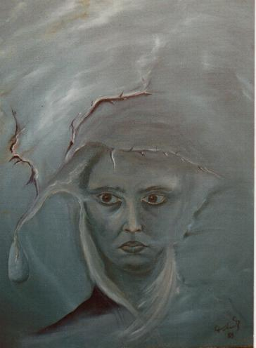
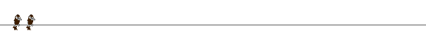

Die Malerei macht es möglich , mich in andere Dimension zu
versetzten.
In die Wellt der Träume, Trennen und Erwachens. Mein Ziel
ist,
bei dem Betrachter des Bildes ein Gefühl zu erwecken,
jedes Gefühl außer die Gleichgültigkeit.

Malen ist... sich selbst zu erforschen
ewig träumen zu können.
Malen ist... Menschen zu verstehen
auf Gefühle zu achten.
Malen ist... Augen schließen zu können
und trotzdem weiter malen.
Teresa Tokarek
***